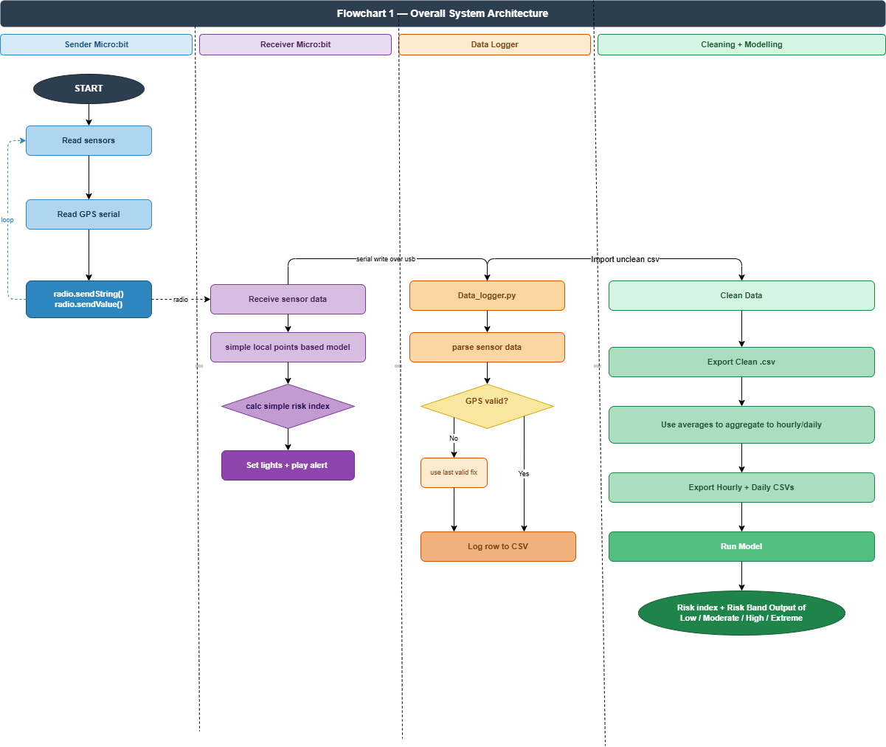
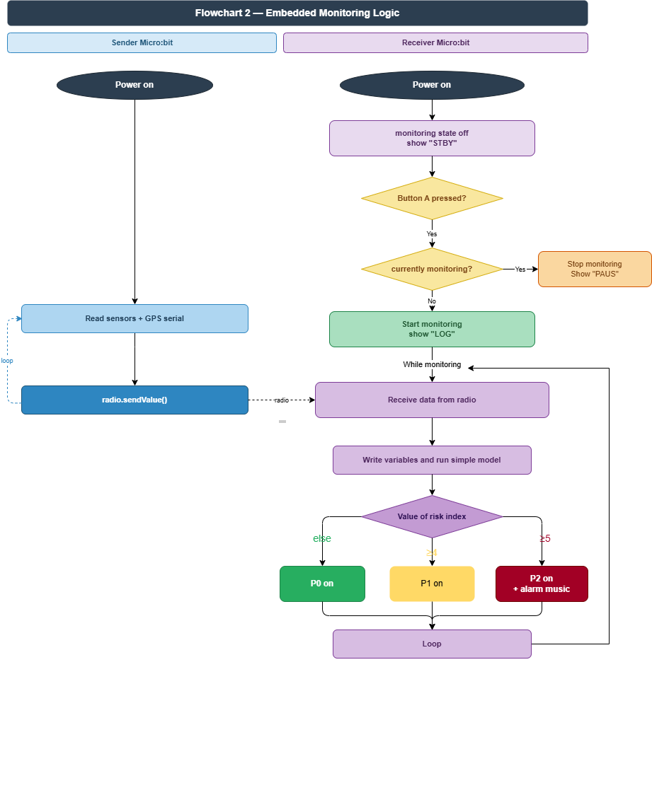
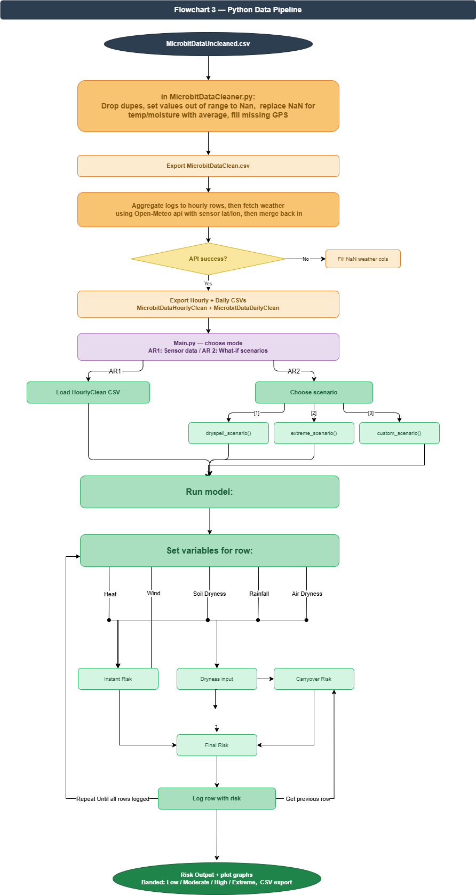

Index:
Plan and Design
Purpose of the System:
The purpose of my system is to monitor environmental conditions linked to wildfire risk and then use those conditions to model how dangerous a forest area may be. The project is split into two parts. The embedded side collects live environmental and GPS data and gives an immediate response when conditions become dangerous, while the computer side stores, cleans and models the data in more detail. This allows the project to both react in real time and analyse how risk changes over time.
Design Objectives:
- The system will use Button A as a digital input to start and pause monitoring.
- The system will use soil moisture as an analogue input and temperature as a sensor input.
- The system will collect and transmit live environmental and GPS readings between two Micro:bits.
- The receiver system will estimate fire risk in real time and update the output automatically.
- The system will provide clear alerts using LEDs and sound.
- The system will log sensor and GPS data to a computer for later processing and analysis.
- The Python side will extract GPS-derived latitude and longitude, use them to request weather data from Open-Meteo, and build a fuller wildfire risk model.
- The model will test changed conditions through what-if scenarios.
Project Options Considered:
Option 1 - All Processing on the Micro:bit: One option was to process everything on the Micro:bit. The advantage of this was real-time processing and immediate output. The limitation was that the Micro:bit has limited storage and processing power, so deeper analysis, GPS parsing, weather-data retrieval, and scenario simulation would be difficult.
Option 2 - Hybrid Embedded and Python Design: Another option was to use a hybrid design. The embedded system would still collect live sensor and GPS data and give live alerts, but a computer-based Python system would handle cleaning, GPS parsing, weather-data retrieval, modelling and scenario testing. The advantage of this is that the system can do both live monitoring and deeper analysis. The limitation is that the overall design is more complex.
Option 3 - Threshold-Based Logging: Another option was threshold-based logging, where values would only be stored when they became dangerous. The advantage of this would be smaller datasets. The limitation is that it could miss the gradual build-up to dangerous conditions and give the Python model less context for modelling risk over time. I chose continuous logging while monitoring is active because this captures the trends over time in the data.
Justification of Design Choice:
I chose the hybrid design with continuous logging because it best fits the project. The receiver Micro:bit can react quickly to dangerous conditions using a simple live risk calculation, while Python can handle the larger jobs such as cleaning data, organising it into hourly values, extracting GPS latitude and longitude, using those coordinates to request Open-Meteo data, combining that weather data with the project data, and running what-if scenarios. This made the project more realistic and more useful than forcing everything into one stage. It also suited a weighted modelling approach influenced by fire danger systems such as EFFIS [4], where multiple environmental conditions are combined into one final risk output.
Stakeholders and End-User Needs:
A forest monitoring stakeholder, such as a ranger or environmental worker, needs a simple system that can warn them when conditions are becoming dangerous. A student or researcher stakeholder needs stored data, clear outputs, and a model that can be tested under different conditions. The main end user is the person operating the finished system, who needs it to be easy to start, easy to understand, and able to provide both an immediate alert and a deeper wildfire-risk result.
Technologies Used:
The project uses two BBC Micro:bits with radio communication. One Micro:bit sends sensor readings including GPS data and the other receives them, updates the live risk response and triggers the outputs. The main sensor inputs are soil moisture from a Kitronik Prong Soil Moisture Sensor and temperature from the onboard Micro:bit sensors, while an Adafruit Ultimate GPS Breakout module is used to provide latitude and longitude for Open-Meteo weather retrieval. LEDs and a buzzer are used as outputs because they give clear immediate feedback. Serial communication is used to send received data to the computer. CSV files are used for storage because they are simple to inspect and process. Python is used for data cleaning, hourly aggregation, GPS parsing, Open-Meteo data retrieval, wildfire risk modelling and what-if scenarios. The model uses a weighted rule-based wildfire risk approach because it can combine several environmental conditions into one final output in a clear and explainable way.
System Architecture:
The system is designed as a deliberate pipeline. The sender Micro:bit reads temperature, soil moisture and GPS data and sends those values by radio. The receiver Micro:bit receives the values, updates the current live wildfire-risk response and triggers the correct alert output. The received data is also logged to a computer, where Python cleans it, validates it, extracts latitude and longitude from the GPS data, uses those coordinates to request weather data from Open-Meteo, combines the weather data with the project data, calculates the final wildfire risk, and runs scenario simulations.


